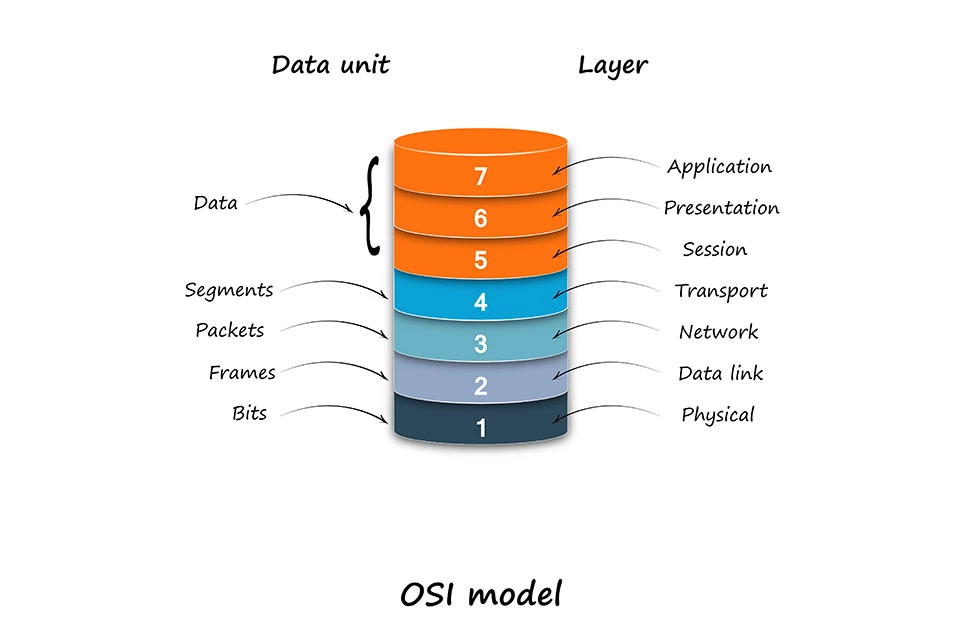

OSI-Modell
Es ist wichtig zu verstehen, wie Computer und Geräte miteinander kommunizieren. Dafür gibt es verschiedene Regeln die genauer beschreiben wie Daten übertragen werden. Ein sehr bekanntes Modell dafür ist das OSI Modell. Es zeigt genau wie Daten Schritt für Schritt von einem Gerät zum anderen gelangen und welche Schichten welche Aufgaben übernehmen.
Was ist das OSI-Modell?
Das OSI-Modell beschreibt, wie Computer und andere Geräte im Netzwerk miteinander kommunizieren. OSI steht für "Open System Interconnection". Es wurde entwickelt, um sicherzustellen, dass Geräte unterschiedlicher Hersteller ohne Probleme miteinander Daten austauschen können. Das Modell besteht aus sieben Schichten (Layers), die jeweils eine bestimmte Aufgabe haben.
- Bitübertragungsschicht (Physical Layer) Sorgt dafür, dass Daten in Form von Nullen und Einsen über Kabel oder Funk gesendet werden.
- Sicherungsschicht (Data Link Layer) Überprüft, ob die Daten fehlerfrei übertragen wurden.
- Vermittlungsschicht (Network Layer) Kümmert sich um Adressen und den Weg der Daten (z. B. IP-Adressen).
- Transportschicht (Transport Layer) Sorgt dafür, dass die Daten vollständig und in der richtigen Reihenfolge ankommen.
- Sitzungsschicht (Session Layer) Verwaltet Verbindungen zwischen Geräten, z. B. wann sie starten und enden.
- Darstellungsschicht (Presentation Layer) Wandelt die Daten in ein Format um, das das Zielsystem versteht (z. B. Text, Bild, Video).
- Anwendungsschicht (Application Layer) Hier befinden sich Programme wie Browser, E-Mail oder Chat-Apps, die die Daten nutzen.
Warum das OSI-Modell wichtig ist
Das OSI-Modell hilft, Netzwerke besser zu verstehen und Probleme schneller zu erkennen. Wenn zum Beispiel keine Verbindung zum Internet hergestellt werden kann, kann man mithilfe der verschiedenen Schichten herausfinden, wo das Problem liegt und ob es bei der Verbindung oder bei der Anwendung liegt. Auch in der Softwareentwicklung oder Netzwerktechnik ist das Modell sehr nützlich. Es zeigt genau ,wie Daten vom eigenen Computer über verschiedene Schichten bis zu einem anderen Gerät gesendet werden. Für mich als Lerndender Applikationsentwickler ist es wichtig das ich dieses Modell kenne und verstehe, da ich so besser nachvollziehen kann, wie die Übertragung von Daten funktioniert. Es macht mir klar, dass jede Schicht eine wichtige Rolle spielt und dass sie zusammenarbeiten müssen, damit alles funktioniert.
Fazit
Das OSI-Modell ist eine der wichtigsten Grundlagen in der Informatik. Es hilft, den Aufbau und den Ablauf im Netzwerk besser zu verstehen und übersichtlich zu bertrachten. Auch wenn es am Anfang theoretisch wirkt, ist es sehr hilfreich, um zu begreifen, wie Computer und Geräte miteinander kommunizieren. Für mich ist das OSI-Modell spannend, da ich auch mal sehe was im Hintergrund passiert.